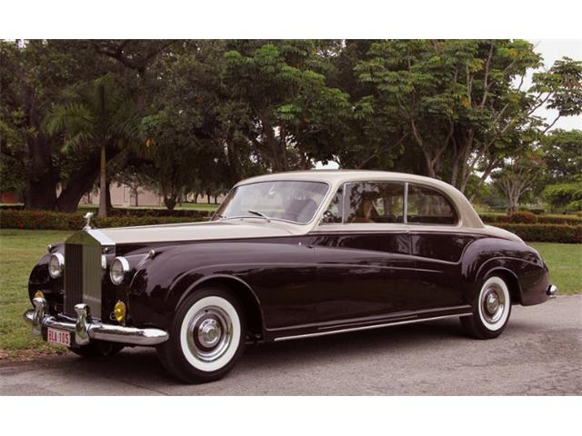

Rolls-Royce Phantom I (1925-1931)

The Rolls-Royce Phantom was Rolls-Royce's replacement for the original Silver Ghost. Introduced as the New Phantom in 1925, the Phantom had a larger engine than the Silver Ghost and used pushrod-operated overhead valves instead of the Silver Ghost's side valves.
The Phantom was built in Derby, England, and Springfield, Massachusetts, in the United States. There were several differences in specification between the English and American Phantoms.
The Phantom was replaced by the Phantom II in 1929. The designation Phantom I was never used by Rolls-Royce; it is a construct of enthusiasts applied to help distinguish it from other generations with the same model name.